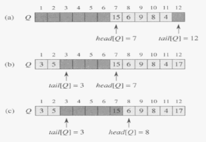
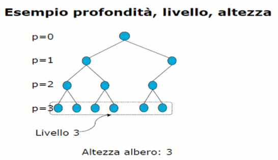

Torna alla pagina di Algoritmi e strutture dati
Questa pagina è stata aggiornata GRAZIE agli appunti che AVETE INVIATO nel periodo di chiusura della sezione UniCrema!! È SERVITA A QUALCOSA, NO?! ;)
:: Stack, code, liste concatenate e alberi radicati ::
Una struttura dati è un modo per memorizzare i dati, organizzarli e semplificarne l'accesso e la modifica. Di seguito ne vedremo alcuni.
Stack e code
Gli stack e le code sono insiemi dinamici dove l'elemento rimosso con DELETE è determinato a priori.
STACK
Con l'operazione DELETE viene eliminato l'elemento inserto per ultimo. Utilizza quindi la politica LIFO (Last–In, First–Out).
Con lo stack o pila l'operazione INSERT è chiamata PUSH(S,x) e la DELETE è chiamata POP(S).
Lo stack viene implementato con un array S di n elementi: S[1..n]. top[S] è l'indice dell'elemento inserito più di recente. L'array quindi sarà: S[1..top[S]]; dove S[1] è l'elemento in fondo allo stack. S[top[S]] invece è l'elemento in cima. Se top[s] = 0 lo significa che lo stack è vuoto. STACK-EMPTY(S) controlla appunto se lo stack è vuoto e se lo è significa che si è verificato un underflow e quindi un errore.
Se top[S] è > n allora si verifica un overflow che però nel codice non viene considerato.
La complessità di queste operazioni è O(1).
Ricordiamo che la pila ha una dimensione fissa.
CODA
Con l'operazione DELETE viene eliminato l'elemento inserito per primo. Utilizza quindi la politica FIFO (First-In, First-Out).
L'operazione di INSERT è chiamata ENQUEUE (Q, x) e quella di DELETE: DEQUEUE(Q).
La coda ha un inizio detto head e una fine detta tail.
Viene implementata attraverso un array di n-1 elementi al massimo. L'array è Q[1..n].
Head[Q] punta all'inizio della coda e tail[Q] punta alla prossima posizione di inserimento.
Se head[Q] = tail[Q] significa che la coda è vuota e in caso voglia eliminare un elemento che non può esserci allora si verifica un underflow.
Se head[Q] = tail[Q] + 1 significa che la coda è piena e in caso di un nuovo inserimento si verifica un overflow.

LISTE CONCATENATE
La lista è una struttura dati che contiene oggetti disposti in ordine lineare. L'ordine è determinato da un puntatore in ogni oggetto. Questo significa che gli elementi sono collegati da un puntatore.
I campi di una lista possono essere:
- key: campo chiave per la ricerca dei dati;
- prev: puntatore al precedente elemento;
- next: puntatore al prossimo elemento.
Se prev[x] = NIL significa che x non ha un predecessore quindi x è il primo elemento della lista detto head.
Se next[x] = NIL significa che x non ha un successore quindi x è l'ultimo elemento della lista detto tail.
Se head[L] = NIL significa che la lista è vuota.
Ci sono diversi tipi di liste:
- singolarmente concatenate: hanno i campi key e next;
- doppiamente concatenate: campi key, prev e next;
- ordinata: l'ordinamento lineare della lista corrisponde all'ordinamento lineare delle chiavi memorizzate negli elementi della lista. L'elemento minimo è la testa e quello massimo la coda.
- Non ordinata: gli elementi si possono presentare in qualsiasi ordine.
- Circolare: l'elemento prev della testa punta alla coda; l'elemento next della coda punta alla testa.
Noi considereremo solo le liste non ordinate e doppiamente concatenate.
Operazioni:
LIST–SEARCH(L,x): trova il primo elemento con chiave = k in L restituendo un puntatore a questo elemento. Se x non c'è restituisce NIL. O(n) nel caso peggiore.
LIST–INSERT(L,x): inserisce x la cui chiave deve essere già stata impostata, davanti alla lista concatenata. O(1)
LIST–DELETE(L,x): deve ricevere linearmente un puntatore a x, poi elimina x e aggiorna i puntatori. O(1).
SENTINELLA: serve a rendere la DELETE più semplice. Consiste in un elemento finto sempre presente nella lista (nil[L]). Trasforma una lista doppiamente concatenata in una lista circolare doppiamente concatenata. La sentinella è posta tra la testa e la coda.
ALBERO RADICATO
Gli elementi di questo albero sono dinamici ed hanno una relazione gerarchica. La radice può avere 0 o più alberi collegati.
Ogni nodo avrà un campo chiave (key) e puntatori agli altri nodi che variano a seconda del tipo di albero.
I puntatori sono:
- p: puntatore al padre;
- left: puntatore al figlio sinistro;
- right: puntatore al figlio destro.
Se left[x] = NIL significa che non esiste il figlio sinistro e così anche per quello destro. root[T] punta alla radice dell'intero albero T e se è = NIL allora l'albero è vuoto.
La profondità o livello di un nodo è il numero di archi che bisogna attraversare per raggiungerlo dalla radice.
L' altezza di un albero è la massima profondità a cui si trova una foglia.

Tecniche di visita degli alberi
- Visita in profondità: vengono visitati i rami uno dopo l'altro. Tre varianti:
- Visita in preordine: si visita prima la radice, poi si fanno le chiamate ricorsive sul figlio sinistro e poi destro.
- Inordine: si fa prima la chiamata ricorsiva sul figlio sinistro, poi si visita la radice, e poi si fa la chiamata ricorsiva sul figlio destro.
- Postordine: si fanno prima le chiamate ricorsive sul figlio sinistro e destro e poi si visita la radice.
- Visita in ampiezza: a livelli, partendo dalla radice.
Torna alla pagina di Algoritmi e strutture dati